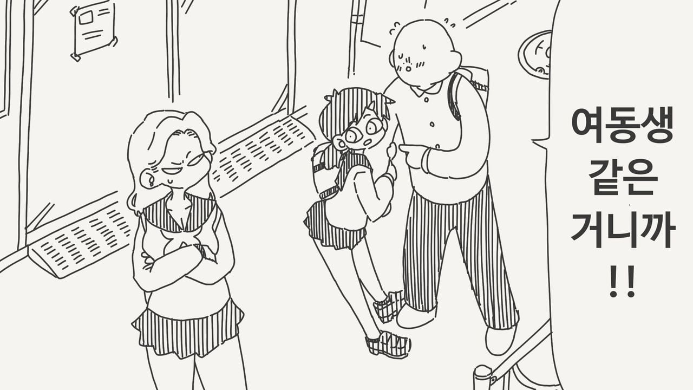
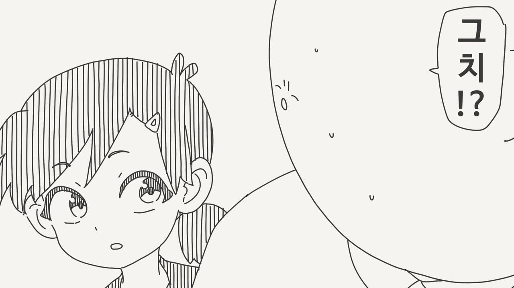
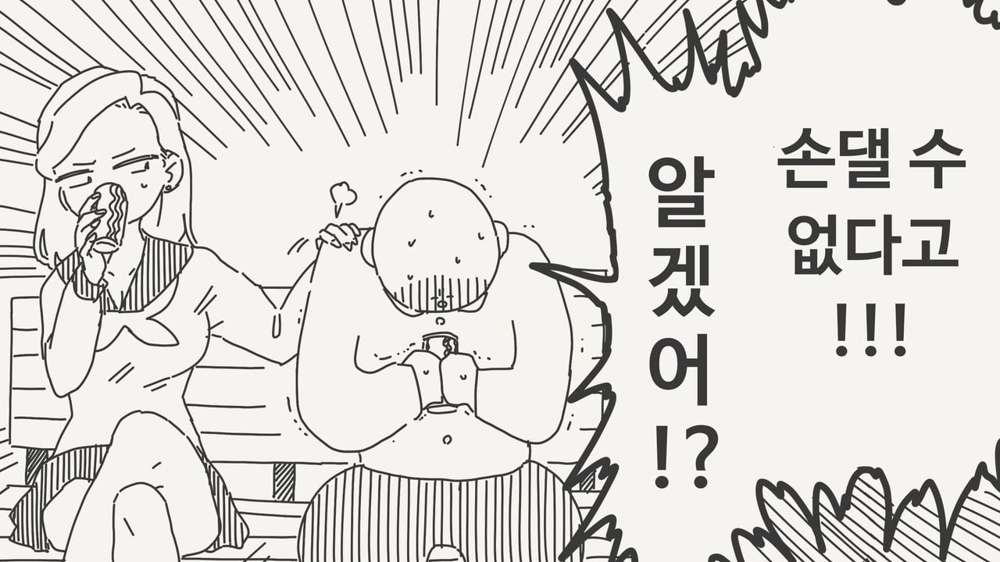

41 · 6 · 57 분 전 · 원문



수집 당시 댓글 6개
tnseoqhRdma · 3 시간 전
질병계 · 2 시간 전
사촌간불알빨기 · 1 시간 전
위로하면서 각보는 금발 갸루는 개추 ㅋㅋ
수박은맛있어 · 58 분 전
선긋기 ㅋㅋ
UncleJAM · 52 분 전
오이쉬 · 6 분 전
저거 손대면 정신적 근친인가
위로하면서 각보는 금발 갸루는 개추 ㅋㅋ